Amaporã
Em 2019, programei minhas férias para o mês de setembro, já com planos de viajar para o Paraná. Logo no primeiro dia de férias, eu e a Teresa saímos bem cedo de casa com o objetivo de fazer uma parada em Presidente Prudente, no interior de São Paulo.
Seguimos direto para a casa da tia dela, a Sra. Terezinha, onde chegamos por volta do meio-dia. Depois do almoço, aproveitamos a tarde para passear de bicicleta pela cidade. O passeio foi tão agradável que acabamos nos empolgando e pedalando por vários bairros e parques. Quando percebemos, já havia anoitecido. Na volta, acabamos nos perdendo e somente com a ajuda do GPS conseguimos encontrar o caminho de volta. A Sra. Terezinha já estava bastante preocupada com a nossa demora, mas, ao chegarmos, explicamos o que havia acontecido.
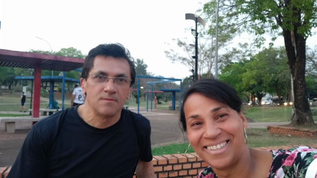
Parque do Povo - Presidente Prudente
Após uma boa noite de descanso e um delicioso café da manhã, seguimos viagem para Amaporã, no Paraná. A Teresa possui uma casa na cidade, que estava desocupada naquele período, e decidimos passar uma semana por lá.Amaporã é uma cidade pequena e tranquila, com poucos atrativos turísticos, mas foi justamente essa simplicidade que tornou a estadia tão agradável. Fizemos vários passeios de bicicleta e visitamos o Parque Estadual de Amaporã, onde percorremos a Trilha do Ipê. A área de preservação é bastante extensa, repleta de árvores centenárias e de grande porte, entre elas o majestoso ipê que dá nome à trilha.
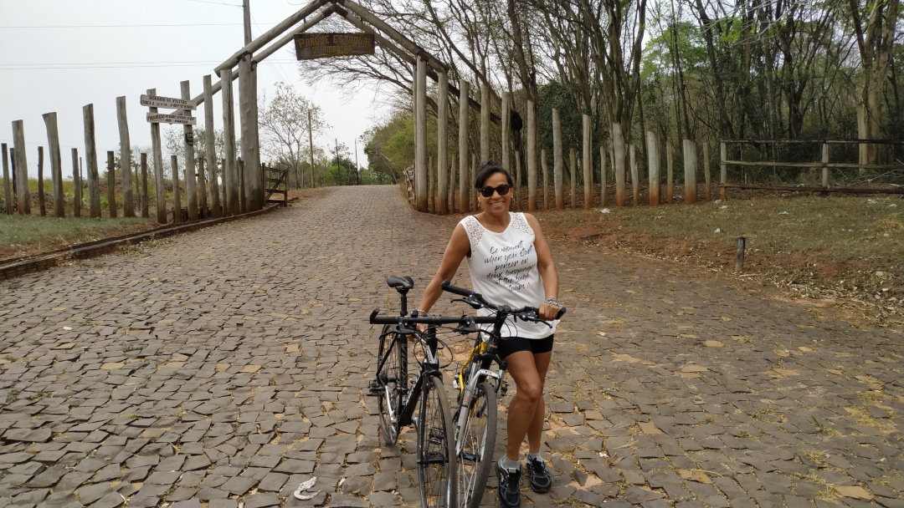
Parque Estadual de Amaporã
Depois dessa semana de descanso, seguimos para Foz do Iguaçu. Ficamos hospedados em um hotel no centro da cidade, o que facilitou bastante nossos deslocamentos. No dia seguinte, saímos a pé em direção à Ponte da Amizade. Cruzamos a fronteira e chegamos a Ciudad del Este, no Paraguai. Caminhamos pelas ruas movimentadas, visitamos lojas e shoppings, compramos algumas lembranças e bugigangas, almoçamos por lá e retornamos ao Brasil no final da tarde.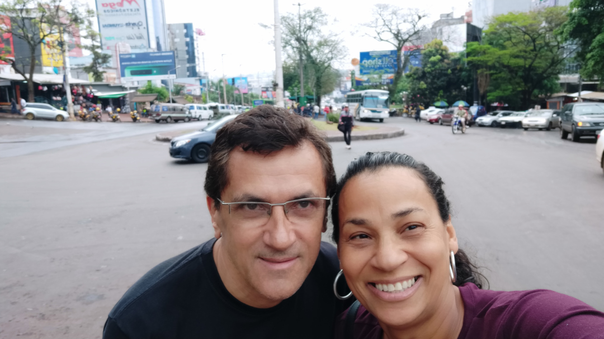
Paraguai
No dia seguinte, adquirimos um pacote turístico que incluía visitas às Cataratas do Iguaçu, ao Parque das Aves, ao Marco das Três Fronteiras e à Usina Hidrelétrica de Itaipu.Nossa primeira parada foi nas Cataratas do Iguaçu. O passeio é realizado em ônibus panorâmicos que percorrem o parque até o início das trilhas. As paisagens são simplesmente espetaculares, com inúmeras quedas d'água formando um cenário impressionante. No entanto, o parque estava muito cheio, com filas em praticamente todas as atrações, o que acabou tirando um pouco da tranquilidade do passeio.
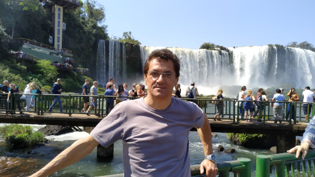
As Cataratas de Iguaçu
Em seguida, visitamos o Parque das Aves. O contato com a natureza, a grande diversidade de espécies e os viveiros integrados à mata proporcionaram uma experiência muito mais calma e agradável. Caminhar entre as árvores e observar as aves de perto foi um dos momentos mais marcantes da viagem.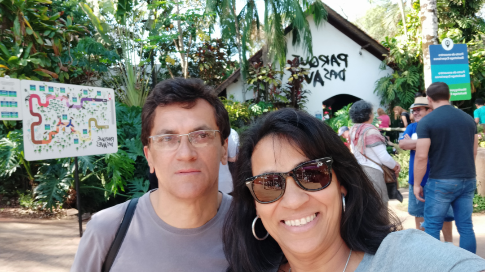
Parque das Aves
Ao anoitecer, seguimos para o Marco das Três Fronteiras. Apesar do cansaço acumulado e do grande número de visitantes, o espetáculo compensou qualquer esforço. Além da belíssima vista para o encontro entre Brasil, Argentina e Paraguai, o local oferecia apresentações culturais que tornaram a experiência ainda mais especial.As Três Fronteiras
Antes de iniciar a viagem de volta para casa, ainda faltava conhecer a grandiosa Usina Hidrelétrica de Itaipu.Chegamos logo pela manhã e embarcamos no primeiro ônibus do passeio panorâmico. Durante o percurso, passamos pela parte inferior da barragem e, em seguida, pela parte superior, de onde foi possível observar toda a grandiosidade da obra. As explicações do guia enriqueceram ainda mais a visita, permitindo compreender a dimensão do empreendimento e sua importância para o Brasil e o Paraguai. Como um bônus do passeio, também visitamos o museu da usina, que conta a história de sua construção e expõe diversos objetos, equipamentos e ferramentas utilizados durante as obras. Foi uma visita muito interessante e enriquecedora.
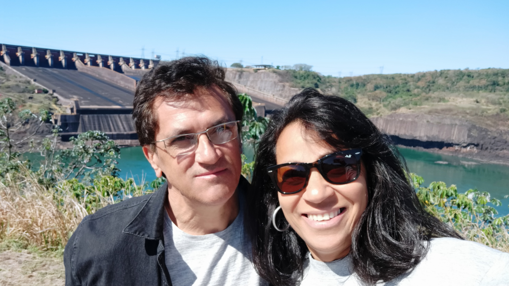
Usina de Itaipú
Por volta das duas horas da tarde iniciamos a viagem de retorno para casa. Fizemos uma parada para almoçar em Cascavel, por volta das quatro da tarde, e depois seguimos viagem.Logo escureceu. A estrada, em grande parte de pista simples, tinha intenso movimento de caminhões e, para completar, enfrentamos chuva durante boa parte do trajeto, o que exigiu ainda mais atenção ao volante. Apesar das dificuldades, a viagem transcorreu sem maiores problemas e chegamos em casa por volta da uma hora da manhã, encerrando mais uma aventura repleta de boas lembranças.
Foz do Iguaçu
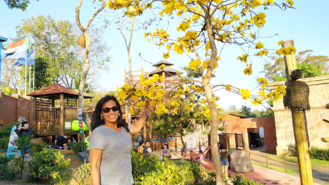
Foz de Iguaçu
Depois de uma longa viagem, saindo de São Paulo, passando por Presidente Prudente e Amaporã, finalmente chegamos a Foz do Iguaçu.
Ainda durante a viagem, fizemos pela internet a reserva de um hotel para nos hospedarmos durante nossa permanência na cidade. Quando chegamos, já estava anoitecendo. Encontramos o hotel, mas a primeira impressão foi bastante decepcionante. O prédio era antigo, mal conservado e muito diferente do que esperávamos.
Depois de conhecer o quarto, deixamos as bagagens e, antes mesmo de efetuar o check-in, pedimos o cancelamento da reserva para procurar outra opção de hospedagem. Percorremos diversos hotéis pela cidade, mas todos estavam com a lotação esgotada. Sem muitas alternativas, acabamos retornando ao primeiro hotel e decidimos permanecer ali mesmo.
No dia seguinte, entendemos o motivo de tanta dificuldade para encontrar hospedagem. Descobrimos que a cidade estava recebendo um grande evento, que atraiu visitantes de várias regiões do Brasil e também muitos turistas argentinos. Por isso, tanto os hotéis quanto os principais pontos turísticos estavam bastante movimentados.
Apesar desse contratempo inicial e das longas filas nos passeios, a viagem foi extremamente gratificante. Conhecer as belezas de Foz do Iguaçu, sua natureza exuberante e atrações mundialmente conhecidas fez com que qualquer inconveniente fosse rapidamente esquecido. No final, voltamos para casa com a certeza de que a experiência valeu cada quilômetro percorrido.
Curitiba
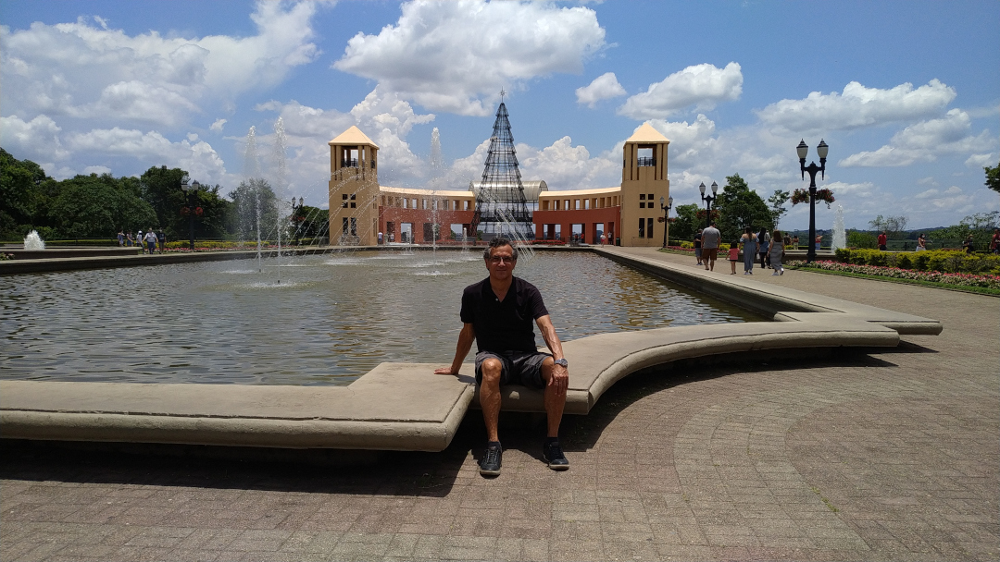
Parque Tanguá
O Imprevisto de Ano Novo: De São Paulo a Curitiba
No Natal, normalmente nos reunimos com a família da Teresa; já no Ano Novo, temos o costume de viajar para algum lugar. Em 2021, compramos passagens com antecedência para passar o Réveillon em Curitiba. No dia 26 de dezembro, levantamos por volta das três e meia da manhã para irmos ao Aeroporto de Guarulhos. Chamamos um Uber, mas o carro estava demorando tanto para chegar que decidimos cancelar a corrida e ir de metrô. Nesse momento, começamos a perceber que o tempo estava curto e que chegaríamos atrasados. Não deu outra: perdemos o voo. Tentamos remarcar as passagens, mas só havia disponibilidade para o dia seguinte e pelo triplo do preço. Diante disso, resolvemos arcar com o prejuízo e ir de ônibus. Pegamos o trem e fomos direto para o Terminal Rodoviário do Tietê. Passava das nove horas da manhã quando desembarcamos lá, mas, felizmente, conseguimos comprar passagens para o ônibus que saía às dez horas. Acabamos chegando a Curitiba por volta das 17h. Apesar de ter sido uma situação chata e cansativa, não deixamos que isso abalasse o nosso humor.
Explorando a Capital Paranaense e Região
A cidade tem muitos atrativos e nós aproveitamos bastante todos os dias em que estivemos lá. Compramos o bilhete do ônibus panorâmico (Linha Turismo) e, durante dois dias, circulamos pelos principais pontos turísticos, tais como:
- Jardim Botânico
- ópera de Arame
- Torre Panorâmica
- Parque Vista Alegre (ou Bosque do Alemão)
- Parque Tanguá
- Parque Passeio Público
Além dos pontos urbanos, fizemos um passeio incrível até os arenitos do Parque Estadual de Vila Velha, onde caminhamos bastante, andamos de tirolesa e visitamos a Lagoa Dourada. Para completar a viagem com chave de ouro, fizemos o tradicional passeio de trem turístico até a charmosa cidade de Morretes, apreciando as belíssimas paisagens da Serra do Mar. Depois, retornamos para Curitiba e, no dia primeiro de janeiro, seguimos para o aeroporto — e, dessa vez, sem atrasos! Não perdemos o voo, e voltamos para casa totalmente satisfeitos e cheios de boas histórias para compartilhar.
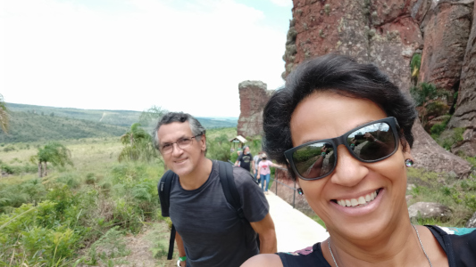
Arenitos
Formações Rochosas: As formações rochosas dos arenitos são um dos principais atrativos turísticos da região. Essas formações naturais, esculpidas pela ação do vento e da chuva, lembram figuras de animais e paisagens surreais.
Trilhas: O parque oferece trilhas de diferentes níveis de dificuldade, incluindo uma trilha completa de 2.700 metros e uma meia trilha de 1.100 metros. Ambas proporcionam uma experiência única de contato com a
Importância Ambiental
O Parque Estadual de Vila Velha foi criado em 1953 e tombado pelo Patrimônio Histórico em 1966. Ele é uma das mais importantes unidades de conservação ambiental do estado do Paraná, protegendo uma área de 18 km² de formações rochosas classificadas como um dos sítios geológicos brasileiros pela SIGEP.
Curitiba
Em 2024, voltamos a Curitiba, desta vez em uma excursão. Embarcamos no ônibus no centro de Taboão da Serra. Esse tipo de viagem é muito mais tranquilo, pois o pacote já incluía hospedagem com café da manhã, passeios guiados e o tradicional passeio de trem até Morretes.
Chegamos a Curitiba no início da noite e fomos levados diretamente ao hotel, onde fizemos o check-in. Como eu e a Teresa já conhecíamos a cidade, aproveitamos para dar uma caminhada pelas ruas do centro, relembrando alguns lugares que havíamos visitado em nossa viagem de 2021. Depois desse agradável passeio noturno, retornamos ao hotel para descansar.
Na manhã seguinte, após um bom café da manhã, saímos para o roteiro turístico. Visitamos novamente alguns dos principais pontos da cidade, muitos deles já conhecidos por nós, mas que continuam encantando pela beleza e organização. Na hora do almoço, fomos ao famoso Restaurante Família Madalosso, conhecido por sua excelente gastronomia italiana e pelas fartas refeições. À noite, aproveitamos para fazer mais um passeio pelas ruas de Curitiba, apreciando o clima agradável da cidade.
No terceiro dia, levantamos cedo, tomamos um café da manhã reforçado e seguimos de ônibus até a Estação Ferroviária, onde embarcamos no tradicional trem com destino a Morretes.
O passeio de trem foi, sem dúvida, um dos pontos altos da viagem. Durante o percurso pela Serra do Mar, pudemos contemplar paisagens deslumbrantes, com montanhas cobertas pela Mata Atlântica, túneis, pontes e vales que tornam essa ferrovia uma das mais bonitas do Brasil.
Ao chegarmos a Morretes, como ainda estávamos satisfeitos com o café da manhã servido no hotel, optamos por fazer apenas um lanche em vez de almoçar. Em seguida, caminhamos tranquilamente pelo centro histórico, visitando lojinhas de artesanato, bancas de produtos típicos e a tradicional feira de artesanato, aproveitando o charme da pequena cidade.
No final da tarde, embarcamos novamente no ônibus da excursão, que nos trouxe de volta diretamente para São Paulo, encerrando mais uma viagem repleta de belas paisagens, bons momentos e ótimas recordações.
Morretes
Outro passeio incrível foi para Morretes
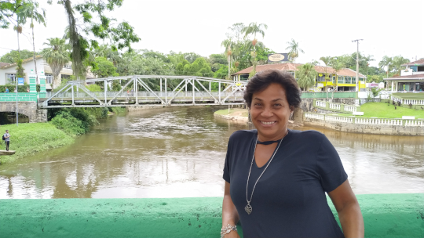
Morretes
Durante nossa estadia em Curitiba, fizemos um dos passeios mais tradicionais do Paraná: a viagem de trem entre Curitiba e Morretes.
O embarque acontece na Estação Ferroviária de Curitiba, de onde parte um dos trajetos ferroviários mais espetaculares do Brasil. O percurso, com cerca de 70 quilômetros, atravessa a Serra do Mar e proporciona aproximadamente quatro horas de viagem em meio a paisagens deslumbrantes da Mata Atlântica.
Ao longo do caminho, o trem cruza 13 túneis, 41 pontes e viadutos históricos, entre eles o famoso Viaduto do Carvalho, com seus impressionantes 110 metros de altura, e a Ponte São João, com 112 metros de extensão. Durante todo o trajeto, é possível admirar rios, cachoeiras, montanhas, cânions e a exuberante vegetação da Mata Atlântica, tornando a viagem uma atração por si só.
Optamos por comprar apenas a passagem de ida, pois sabíamos que o trem de retorno parte de Morretes por volta das 15 horas. Como queríamos aproveitar a cidade com mais tranquilidade, decidimos voltar de ônibus no final da tarde.
Assim que chegamos a Morretes, fomos procurar um restaurante para almoçar. Pelas ruas do centro histórico, diversos estabelecimentos disputavam a atenção dos visitantes, com funcionários apresentando cardápios e convidando os turistas a experimentar o prato típico da região: o famoso barreado. Preferimos escolher uma refeição diferente.
Morretes é uma cidade pequena, charmosa e muito acolhedora. Caminhamos tranquilamente por suas ruas históricas, visitamos as lojas de artesanato, apreciamos o casario colonial e fizemos várias paradas para contemplar a beleza do Rio Nhundiaquara, que atravessa a cidade e compõe um cenário muito agradável.
No final da tarde, uma forte chuva começou a cair. Como o tempo não dava sinais de melhora, decidimos encerrar o passeio. Seguimos até a rodoviária, compramos as passagens e retornamos de ônibus para Curitiba, encerrando um dia inesquecível, marcado por belas paisagens, boa gastronomia e pelo charme de uma das cidades históricas mais encantadoras do Paraná.
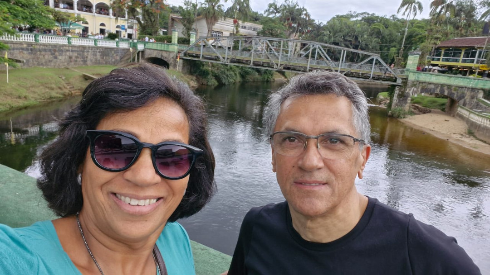
Morretes 2024
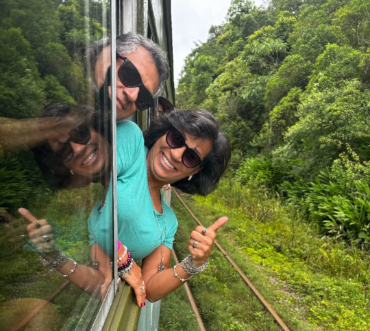
No trem turistico rumo a Morretes
Arenitos de Vila Velha
Ao caminharmos entre os imponentes arenitos, fomos surpreendidos por uma paisagem fascinante. As gigantescas formações rochosas, moldadas pela natureza ao longo de milhares de anos, criam um cenário de rara beleza, capaz de encantar qualquer visitante.